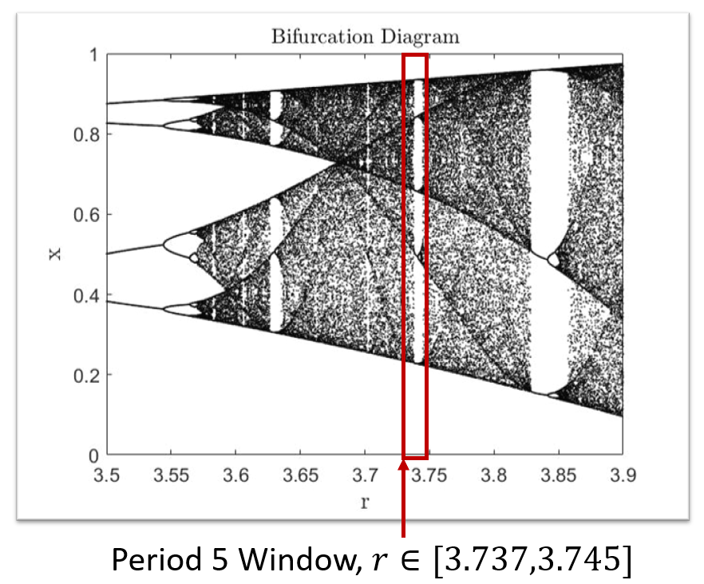

Other Projects
Diversity Induced Resonance
 In some coupled systems of nonlinear oscillators, it has been found that introducing noise, rather than disturbing the intrinsic dynamics, can actually bring out very ordered and periodic responses. One particular instance of this phenomenon is diversity induced resonance, where an optimal amount of diversity, noise in the system parameters, can induce a maximally coherent behavior in the system (reference). We were working on a coupled system of logistic maps (reference) which are a discrete analog of population dynamics. The region of interest was a period 5 window in the bifurcation diagram.
 The oscillators were coupled using a global mean coupling term. In the chaotic region at the edge of period 5 window, it was found that an optimal amount of noise in the parameters could actually push the system to exhibit period 5 dynamics. The phenomenon was very robust against the system size and a range of coupling strengths. To analyze in detail, a reduced mean field model of the system was implemented which accurately replicated the shifts in periodic windows. Although a global coupling is mathematically easier to handle, non-local coupling represents a more generic model of coupled dynamics. (references). Hence, we tested robustness of the phenomenon by limiting the extent of interactions to a local coupling and found coherent behaviors even for smaller ranges of interaction.
The oscillators were coupled using a global mean coupling term. In the chaotic region at the edge of period 5 window, it was found that an optimal amount of noise in the parameters could actually push the system to exhibit period 5 dynamics. The phenomenon was very robust against the system size and a range of coupling strengths. To analyze in detail, a reduced mean field model of the system was implemented which accurately replicated the shifts in periodic windows. Although a global coupling is mathematically easier to handle, non-local coupling represents a more generic model of coupled dynamics. (references). Hence, we tested robustness of the phenomenon by limiting the extent of interactions to a local coupling and found coherent behaviors even for smaller ranges of interaction.